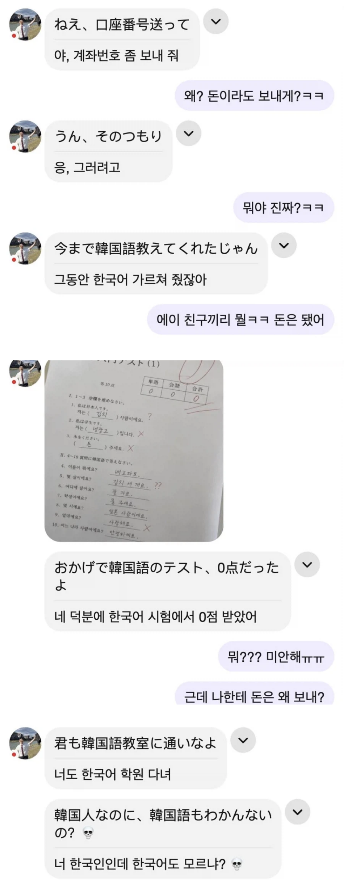

https://bbs.ruliweb.com/best/board/300143/read/77341260

https://bbs.ruliweb.com/best/board/300143/read/77341260

으디 배씹니꺼?
돈 주세요 는 맞는거 아니야?
원문은 얼음 주세요임
너도 돈 필요하냐
주시다면 아리가또 고자이 마스
일본인을 김치로 쓴거면 걍 주작 아니냐
교토 사람이구나
ai인가봐
쓰기가 되는데 읽기가 안 되는 게 말이 안 된다
고로 AI거나 주작이다
너무 작위적이다
김치 세개요
시루바 색기
일본을 김치로 번역하는게 말이 안되지
노잼이긴 하네
김치사람이면 한국인인데
ㅋㅋㅋㅋㅋㅋ
Ai 닥 ㅂㅁ
답보니까 순서가 엇갈렸지 매칭되는답이 많은데? 받으쓴새끼가 못알아들은거 아니냐? ㅋㅋㅋㅋ
순서 엇갈린거 2개밖에안보이는대 너도 한국어 학원 다녀야 하는거 아니냐
AI
ㅋㅋㅋㅋㅋ웃기긴하네
배고파요